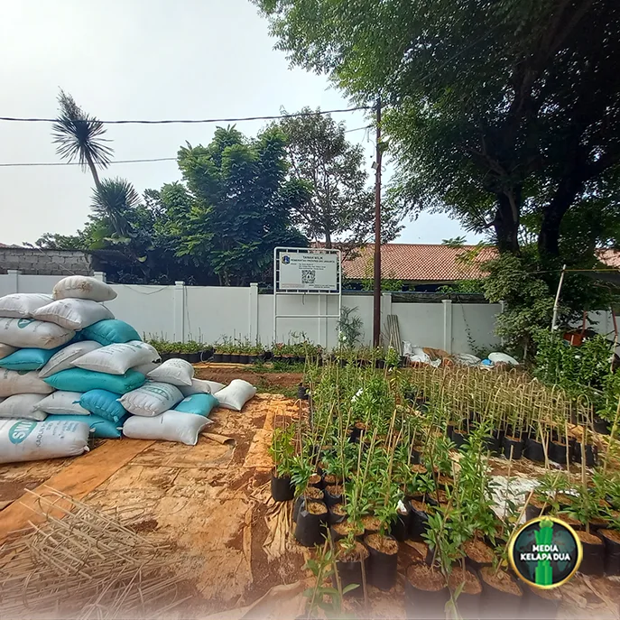
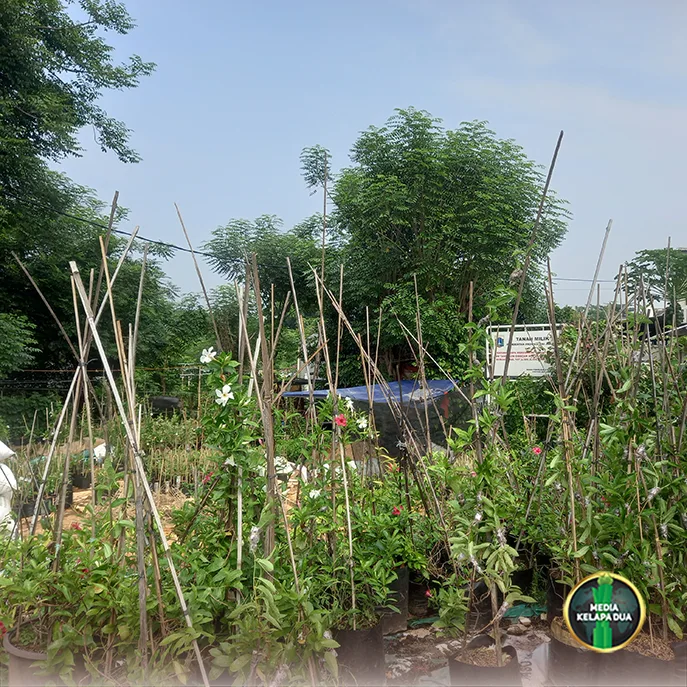
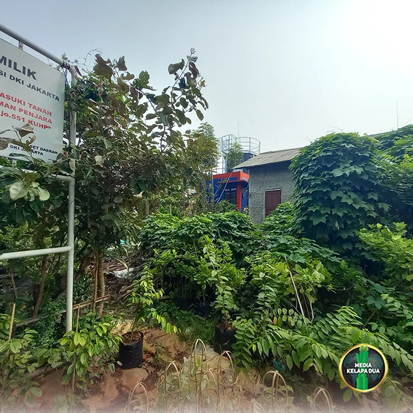
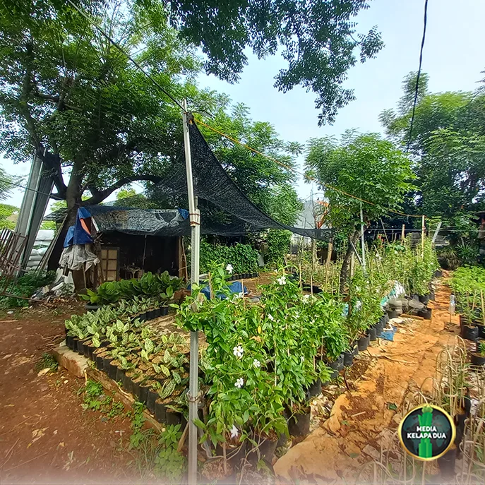

MediaKada | Kelurahan Kelapa Dua bersama Pengurus RW 08, LMK, dan masyarakat setempat mengusulkan pembangunan Ruang Publik Terpadu Ramah Anak (RPTRA) di wilayah RW 08 Kelurahan Kelapa Dua, Kecamatan Kebon Jeruk, Kota Administrasi Jakarta Barat.
Usulan tersebut bertujuan untuk meningkatkan kualitas lingkungan permukiman sekaligus menyediakan ruang publik terbuka yang aman, nyaman, dan ramah anak. Kehadiran RPTRA diharapkan dapat menjadi sarana bermain bagi anak-anak, tempat kegiatan olahraga, edukasi, pemberdayaan masyarakat, serta pusat interaksi sosial bagi warga.
Kebutuhan akan ruang terbuka publik yang representatif menjadi dasar utama pengajuan pembangunan RPTRA ini. Selain memberikan manfaat bagi masyarakat, keberadaan RPTRA juga diharapkan dapat mendukung program Pemerintah Provinsi DKI Jakarta dalam meningkatkan kualitas hidup warga, memenuhi hak-hak anak, serta menciptakan lingkungan yang sehat, aman, dan berkelanjutan.
Adapun lokasi yang diusulkan berada di Gang Kayu Manis IV RT 005 RW 08, Kelurahan Kelapa Dua, Kecamatan Kebon Jeruk, Kota Administrasi Jakarta Barat, dengan luas lahan sekitar 1.290 meter persegi. Lahan tersebut merupakan aset milik Pemerintah Provinsi DKI Jakarta yang tercatat dalam Kartu Inventaris Barang A (Tanah) Suku Badan Pengelolaan Aset Daerah Kota Administrasi Jakarta Barat dengan Kode Barang 131010202002 Register 000001.



Masyarakat juga menyoroti status lahan tersebut yang sebelumnya pernah diperjualbelikan oleh pihak lain. Namun, saat ini telah diterbitkan Surat Keputusan Kepala Kantor Wilayah Badan Pertanahan Nasional Provinsi DKI Jakarta Nomor 14/Pbt/BPN.31/XII/2024 tentang Pembatalan Sertifikat Hak Guna Bangunan Nomor 017331 Kelapa Dua, sehingga memperkuat status kepemilikan lahan oleh Pemerintah Provinsi DKI Jakarta.
Upaya Kelurahan Kelapa Dua, RW 08, dan masyarakat dalam mewujudkan pembangunan RPTRA terus dilakukan melalui dukungan pengembalian status lahan oleh Pemprov DKI Jakarta, usulan melalui Musrenbang dan usulan langsung, serta penyampaian aspirasi pada kegiatan Reses Anggota Dewan.
Masyarakat RW 08 Kelurahan Kelapa Dua berharap Pemerintah Provinsi DKI Jakarta dapat memberikan dukungan penuh terhadap pembangunan RPTRA di lokasi tersebut. Harapan ini disampaikan mengingat hingga saat ini Kelurahan Kelapa Dua belum memiliki Ruang Publik Terpadu Ramah Anak (RPTRA), sehingga keberadaannya dinilai sangat penting sebagai fasilitas publik yang dapat dimanfaatkan oleh seluruh lapisan masyarakat.
Dengan terwujudnya pembangunan RPTRA, masyarakat berharap tercipta ruang yang mampu mendukung aktivitas sosial, pendidikan, olahraga, dan pemberdayaan warga, sekaligus menjadi simbol komitmen bersama dalam mewujudkan lingkungan yang ramah anak dan berkualitas di Kelurahan Kelapa Dua.